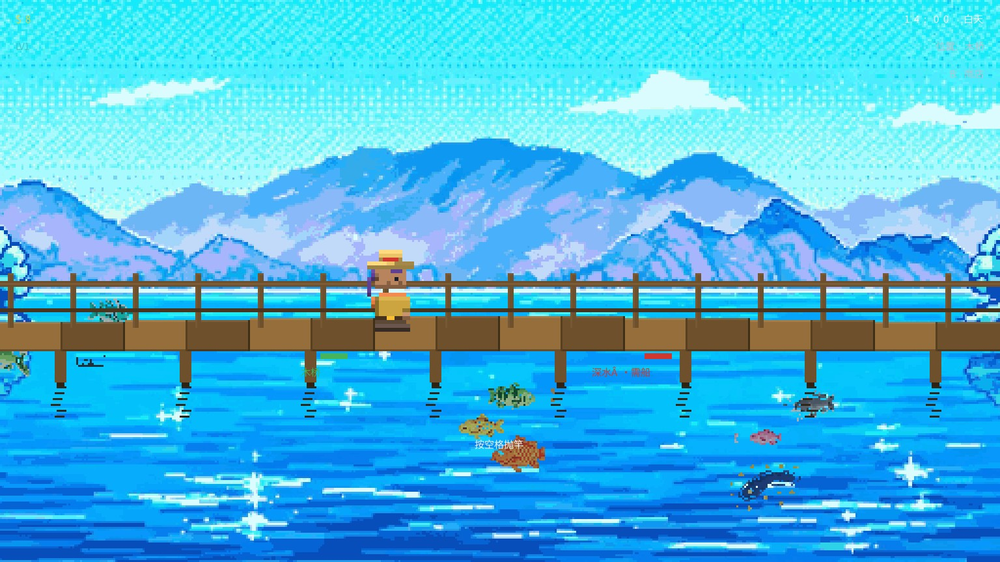
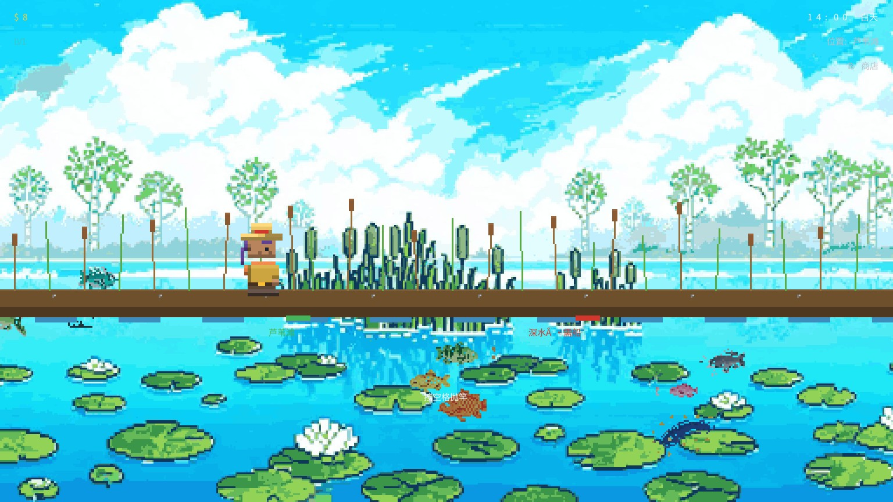
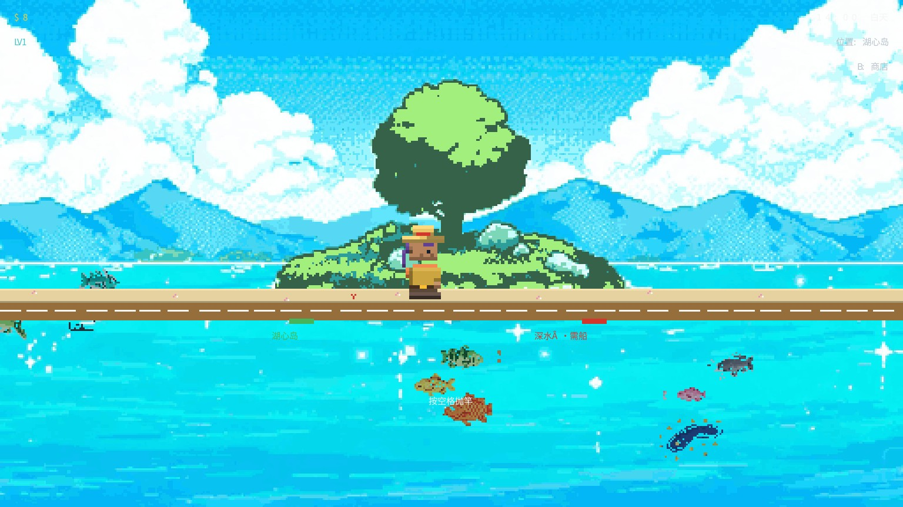
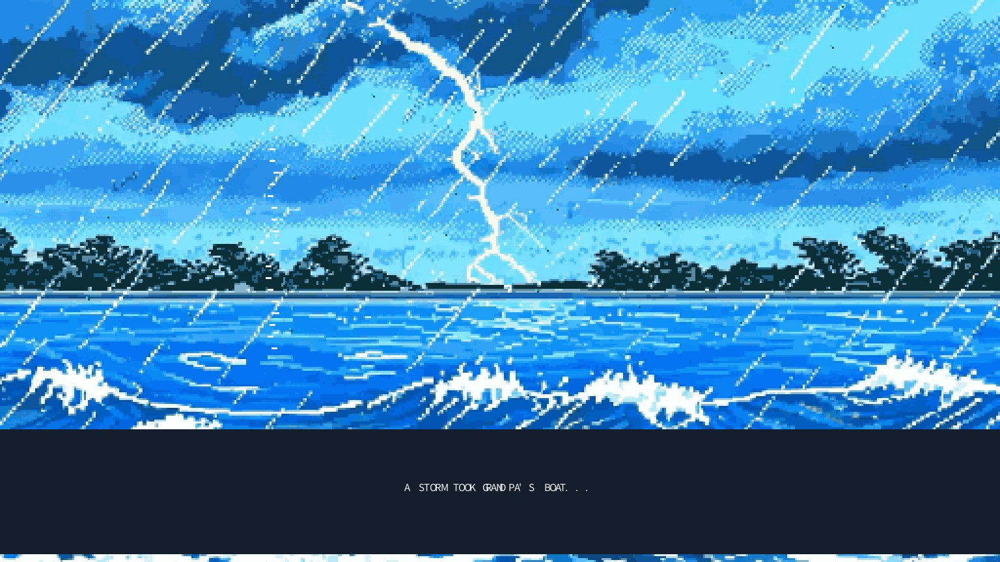

PixelLakeHeart — 游戏实时截屏
游戏引擎实际渲染输出（1536×864，逻辑 512×288 三倍整数放大）· 本次更新：背景更细腻（512×288 直接 BOX 采样，像素颗粒感减半）、经典 SPOT 文字 HUD 回归、16-bit 日式角色与五区域大地图保留
🗺️ 多区域大地图 · 向右走遍全湖
玩家走到画面右缘即前往下一区域（左缘返回）：码头 → 木桥 → 芦苇滩 → 湖心岛 → 深水区（深水需先买 $150 小船）。HUD 右上显示 SPOT:当前位置，水面左下角为当前区域标签，右下角显示深水乘船状态。

① 码头 草地 + 木板栈桥，HUD 显示 SPOT:PIER，水线绿色区域标签起点

② 木桥（全新造型） 全宽拱形桥面 + 双横栏栏杆，桥下水中支柱新桥

③ 芦苇滩 泥岸水洼 + 随风摇摆的芦苇香蒲丛新场景

④ 湖心岛 沙滩 + 贝壳海星点缀，湿沙浪线起伏新场景

⑤ 深水区 · 乘船 玩家站在自己的小船上，HUD 显示"位置:深水区"需小船

没船 · 湖心岛右缘 走到右缘会被拦下，提示买小船($150)才能出海门槛
🎣 全新角色 · 16-bit 日式像素小人
玩家换为戴草帽、穿橙色钓鱼马甲的日式像素钓手（大头小身、干净色块、两段明暗）；商店老板换为白毛巾头带 + 圆眼镜 + 八字胡的鲜鱼市场大叔。

新玩家造型 草帽 + 橙马甲钓手，走路摆臂动画新人物

抛竿姿势 双手握竿，鱼线划出抛物线新人物

新商店老板 毛巾头带 + 圆眼镜 + 八字胡，藏青法被白围裙新老板

商店（中文） "码头商店"，老板隔柜台搭话新老板
🌗 昼夜四时段 · 每个区域独立背景
五个区域 × 白天/黎明/黄昏/夜晚共 20 张 AI 像素背景，按区域 + 时间自动切换。

黎明 码头timeH=6.5

黄昏 码头timeH=17.5

夜晚 天空/水面/角色/水下游鱼都清晰可见提亮

等待咬钩 鱼缓缓游向浮标动态
🐟 钓鱼流程

咬钩 浮标抖动下沉

渔获画面 64×64 手绘像素鱼英文

渔获画面（中文） "捕获 XX"

收竿 · 传说鱼 小绿区快移标记高难
📘 鱼类图鉴 · 十种鱼各归各位

渔夫日志（中文） 鲤鱼/鲈鱼/银鲤/鲶鱼/大口鲈/蓝鳃/鲑鱼/金鳟/电鳗/湖龙图鉴

Fisherman's Log（英文） 同十种鱼，英文名图鉴
🏠 标题 / 捏脸 / 开场

标题（英文）

标题（中文）

捏脸 肤色/发型/发色/上衣/裤色自定义

开场 CG 剧情幻灯剧情